Divij Ghose
Doctoral Researcher in Computational & Applied Mathematics, Imperial College London
I am a first year PhD student with Colin Cotter in the Department of Mathematics, Imperial College London. I am funded by the EPSRC Centre for Doctoral Training in Collaborative Computational Modelling at the Interface (CCMI CDT). Previously, I was a Senior Research Fellow at the Department of Computational and Data Sciences (CDS), IISc Bangalore, where I worked with Sashikumaar Ganesan. I work at the intersection of Finite Element Methods (FEM), Uncertainty Quantification, and Scientific Machine Learning, with a focus on problems in Computational Fluid Dynamics.
I am currently exploring the Firedrake FEM framework, with the aim of eventually implementing optimal control and data assimilation strategies for my project on PDE-driven Digital Twins. At IISc, I developed the FastVPINNs framework. I had previously worked on implementing the dynamically othogonal field equations scheme for uncertainty quantification in ParMooN for SPADE, funded by the Ministry of HRD. My work on Scientific Machine Learning was partially funded by Shell Technology Centre, Bangalore.
I graduated with a B.Tech in Mechanical Engineering from the College of Engineering Pune (CoEP), with Honors in Thermal Engineering, at the top of my class. I have received the Forbes Marshall Award for the Most Outstanding Project and the Prof. S.R. Kajale Memorial Medal for the Best Outgoing Mechanical Engineering Student. I started my career as an R&D engineer at Bajaj Auto. More recently, I built and led the Scientific Machine Learning team at Zenteiq, where I integrated SciML into the CAE workflows of our industry clients.
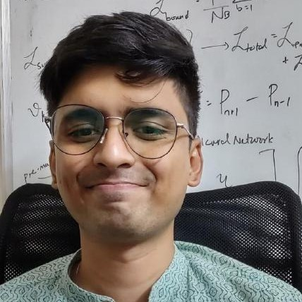
News
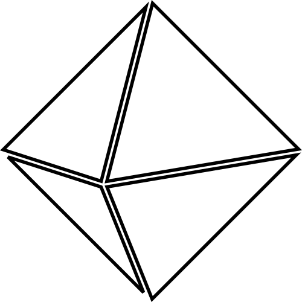
I was selected to participate in the LOGML (London Geometry and Machine Learning) Summer School 2026 at Imperial College London. I worked with Hefin Lambley on new point-cloud architectures for mesh-invariant operator learning.
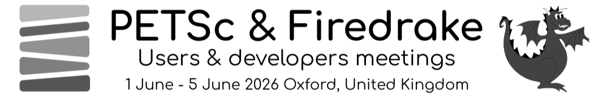
I participated in the PETSc and Firedrake Users & Developers Meeting in Oxford.
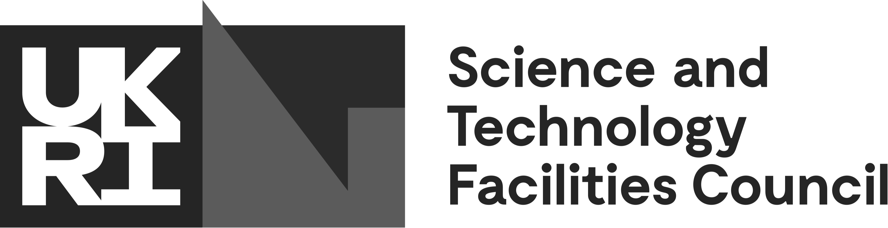
I visited the Rutherford Appleton Laboratory as part of a CCMI CDT tour. We were shown around the facility, including the Diamond Light Source and the ISIS Neutron and Muon Source. I also presented a short talk on my ongoing research!
I participated in the DiRAC AMD Cross-Community Hackathon organized at the University of Birmingham. My team worked on porting the assembly routines in Firedrake to AMD GPUs using MLIR.
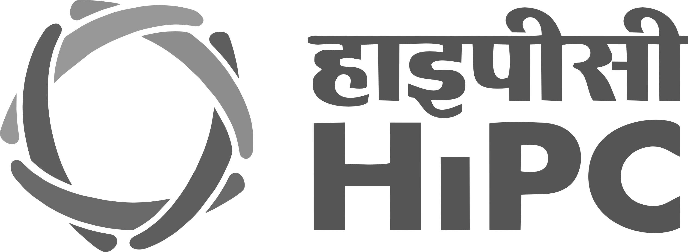
Our paper titled "A novel Layer-wise Relevance Propagation (LRP)-guided clustering-based compression framework for deploying deep neural network models on memory-constrained device" was presented at the main session of the 32nd IEEE International Conference on High Performance Computing, Data, and Analytics (HIPC), Hyderabad, 2025!
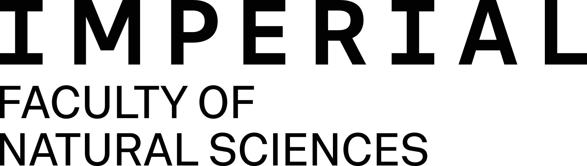
I have started my PhD in the Department of Mathematics at Imperial College London! I will be working with Colin Cotter on PDE-driven Digital Twins, funded by the EPSRC CCMI CDT.
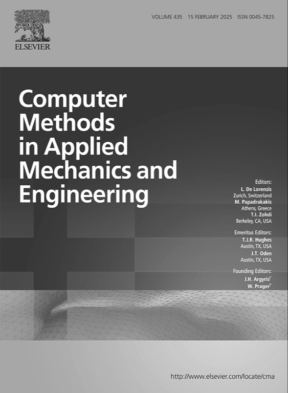
Our paper, titled "Improving hp-Variational Physics Informed Neural Networks for Steady-State Convection-Dominated Problems" has been accepted for publication in Computer Methods in Applied Mechanics and Engineering!

I was one of the organizers of the 1st International Conference on Applied AI and Scientific Machine Learning 2024. Over the course of three days, we hosted leading researchers from academia and industry, including Prof. Karniadakis (Brown), Prof. Anandkumar (Caltech), Prof. Vinuesa (KTH), Prof. Rozza (SISSA), Dr. Heinlein (TU Delft) and Prof. Mishra (ETH). The conference was attended by about 300 participants, with contributed presenations and posters.
I organized the preconference workshop on Scientific Machine Learning for the 1st International Conference on Applied AI and Scientific Machine Learning 2024. I took sessions on PINNs, Neural Operators and our framework, FastVPINNs, for over 200 participants from academia and industry.
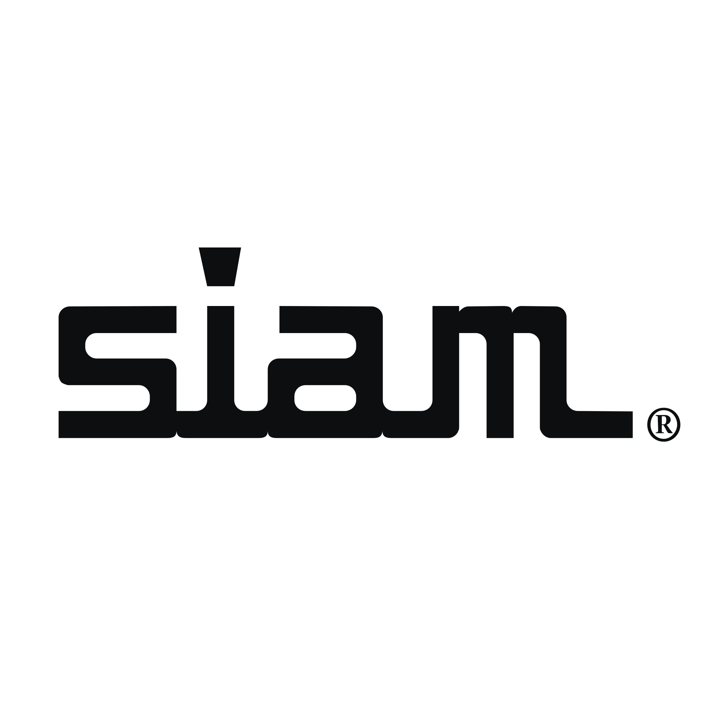
Our paper, "FastVPINNs: Tensor-Driven Accdeleration of VPINNs for Complex Geometries", has been accepted for publication in the SIAM Journal on Scientific Computing (SISC)!
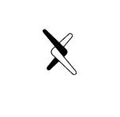
Our paper on "Improving hp-Variational Physics-Informed Neural Networks for Steady-State Convection-Dominated Problems" is now out on arXiv!
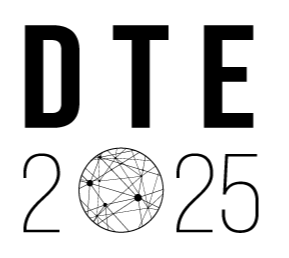
Two of our papers have been accepted at DTE & AICOMAS, Paris, 2025!
I attended the Indo German Workshop on Hardware Aware Scientific Computing at the University of Heidelberg! We presented our work on FastVPINNs, particularly our new results on solving singularly perturbed PDEs using hp-VPINNs. Thivin won the best poster award for presenting our work on FastVPINNs.
I volunteered as a Machine Learning Specialist to conduct office hours for the Stanford FLAME AI Challenge!
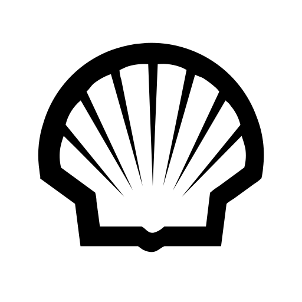
I attended the Shell.ai Scientific Conference 2024!
Our preprint titled "An efficient hp-Variational PINNs framework for incompressible Navier-Stokes equations" is out on arXiv.
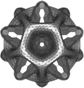
Our work on the FastVPINNs library has been published in the Journal of Open Source Software!
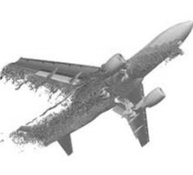
Our paper titled "Fast and Efficient hp-Variational PINNs framework for p solving the Incompressible Navier-Stokes equations" was presented at ICCFD 2024 in Kobe!
The preprint for FastVPINNs is now available on arXiv.
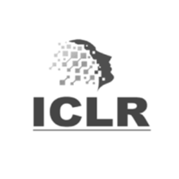
We presented our new framework, FastVPINNs, at the ICLR 2024 Workshop on AI4Differential Equations In Science, Vienna!
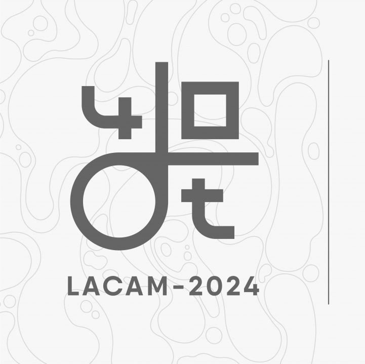
I attended the International Conference on Latest Advances in Computational and Applied Mathematics, 2024, at IISER Thiruvananthapuram as a contributing speaker.
I am attending the Shell.ai Scientific Conference in Bangalore!
I was part of one of the top teams at the Stanford FLAME AI Challenge!

I was part of the student organizing committee for the Indo-German Conference on Computational Mathematics 2024, at IISc Bangalore.
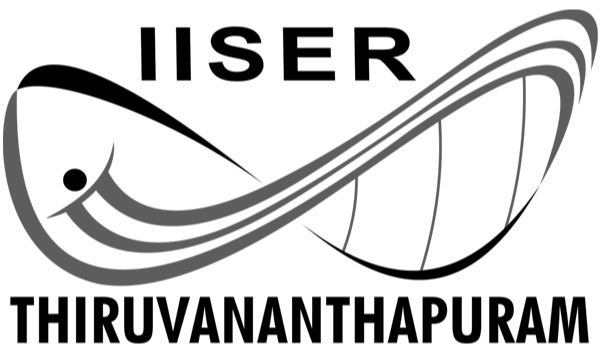
I attended the NCM workshop on Numerical Methods for Differential Equations at IISER Thiruvananthapuram.
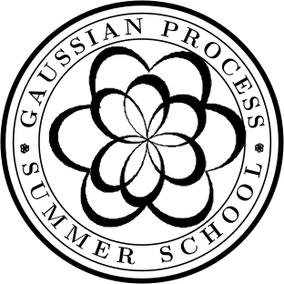
I attended the Gaussian Process Summer School 2021!
I attended the Qiskit Global Summer School 2021!
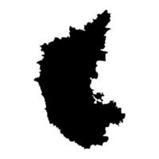
Our work on "Ensemble forecast of COVID-19 in Karnataka for vulnerability assessment and policy interventions" is now available as a preprint!
Press: Deccan Herald | The New Indian Express